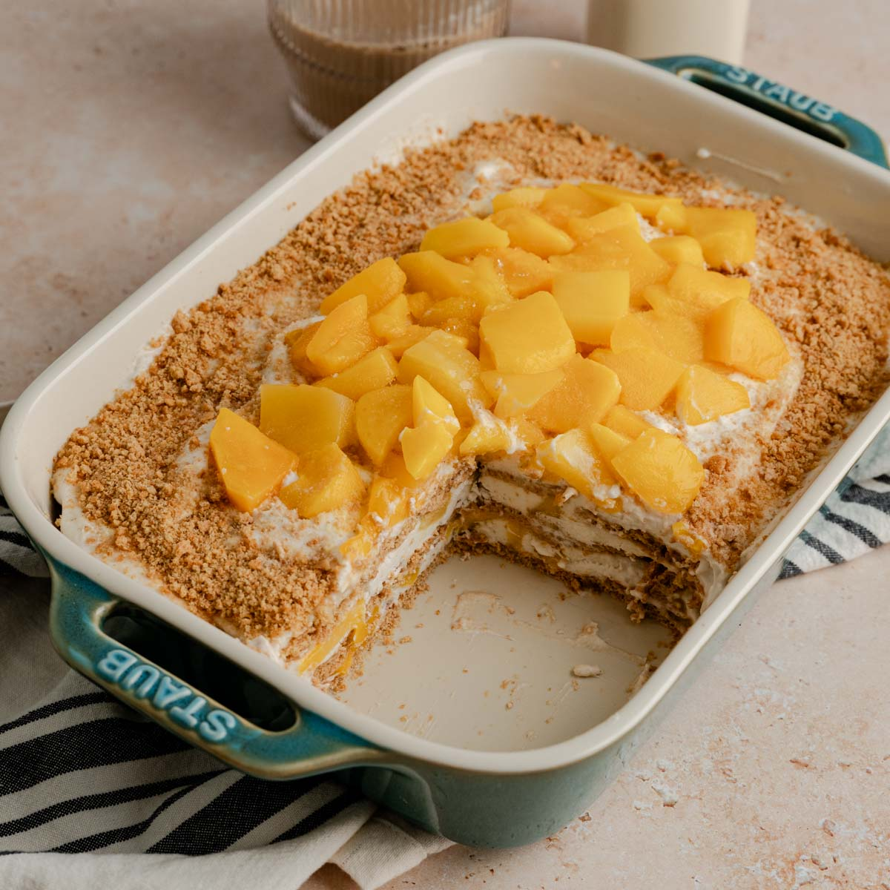

Home

Description
Ingredients:
- Mangoes
- Heavy cream/all-purpose cream
- Condensed milk
- Graham cracker
Steps:
- Peel the mangoes and cut the lobes off as close to the pit as possible. Thinly slice half of the mango lobes into ¹⁄₁₆-inch (15 mm)-thick slices, keeping the slices intact and transferring to a tray or plate. Cover and refrigerate until ready to assemble. Cut the remaining mango into ½-inch (1.24 cm) cubes. Transfer to a bowl, cover, and refrigerate until ready to assemble.
- Add 2 cups of cream to a chilled large bowl and use an electric hand mixer to beat on medium-high speed until stiff peaks form, 3–5 minutes. Add the remaining 2 cups of cream and beat again until stiff peaks form, 3–5 minutes more.
- Add half of the condensed milk and beat until fully incorporated. Add the remaining condensed milk, vanilla, and salt and beat until fully incorporated and stiff peaks form, 4–7 minutes. Give the mixture a final stir with a rubber spatula.
- Line a chilled 7 x 11 (17 x 27 cm) -inch glass dish with parchment paper, leaving overhang on all sides.
- Cover the mango float in plastic wrap and refrigerate for 4–6 hours, until the cream sets and the graham crackers soften and absorb some moisture. Transfer the float to the freezer for 8 hours, or overnight.
- Remove the float from the freezer and use the parchment paper to lift out of the dish. Let thaw for 5–10 minutes before slicing.
- Enjoy!